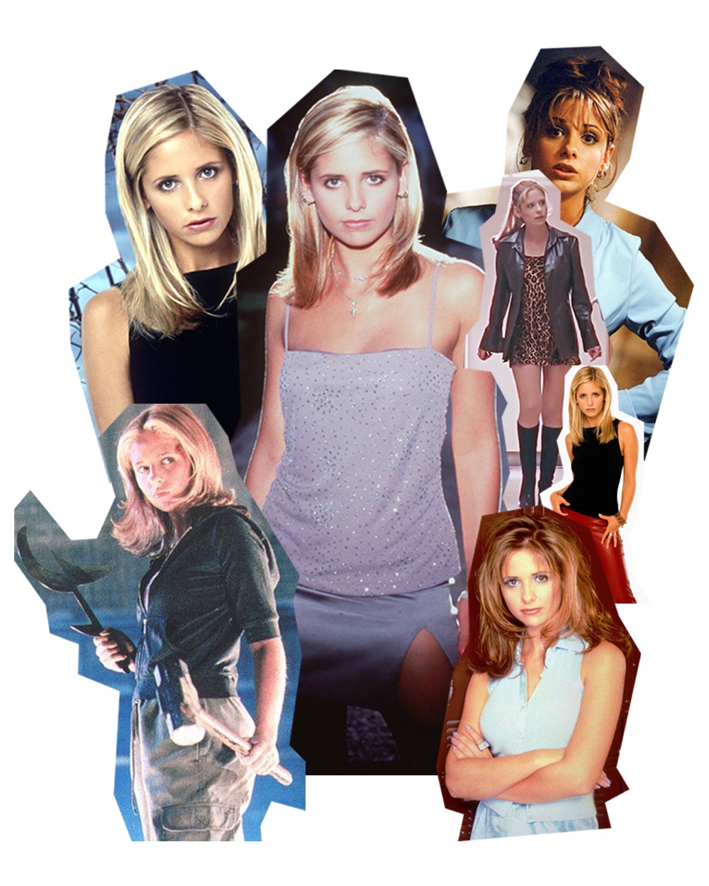
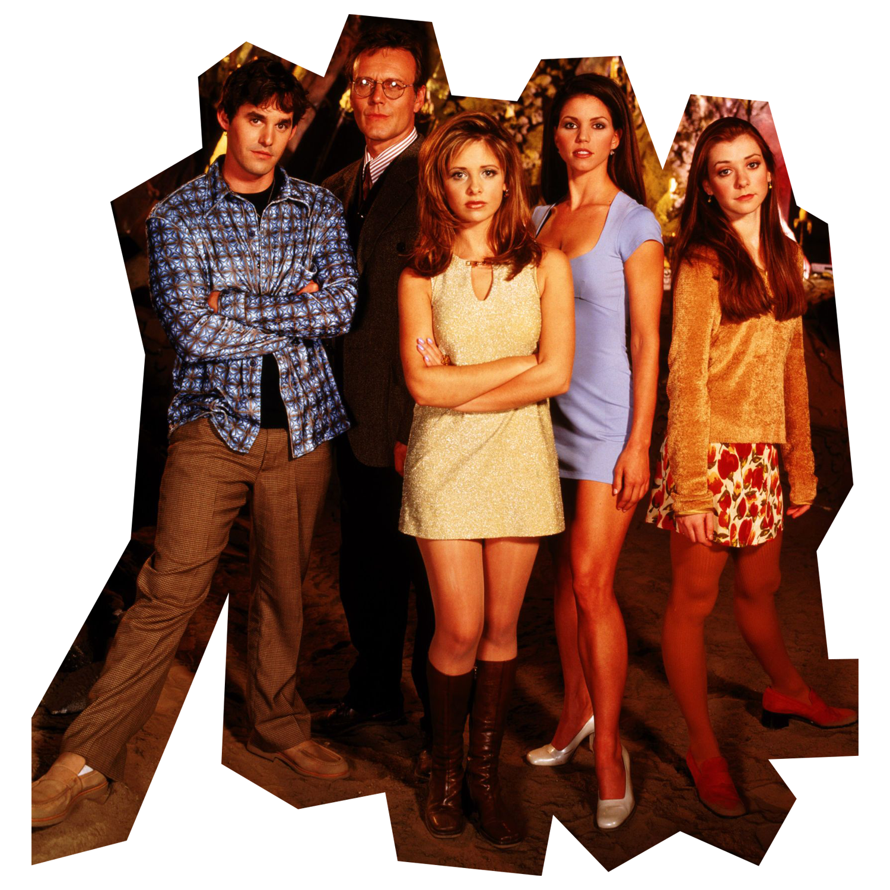
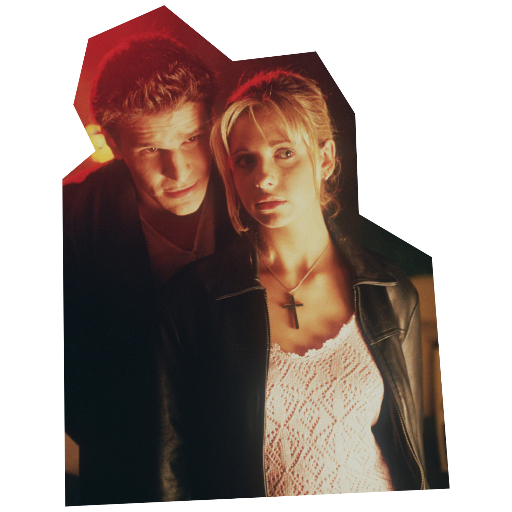
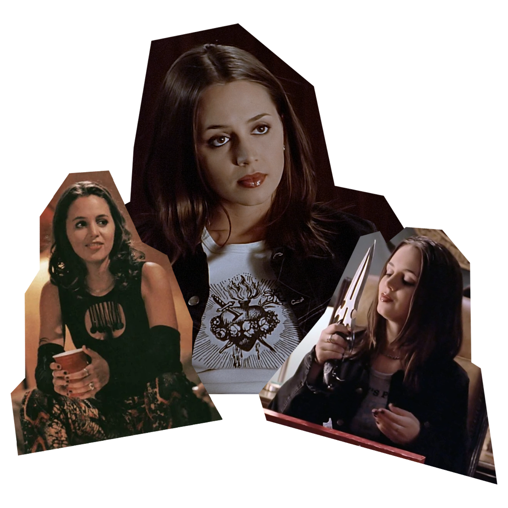
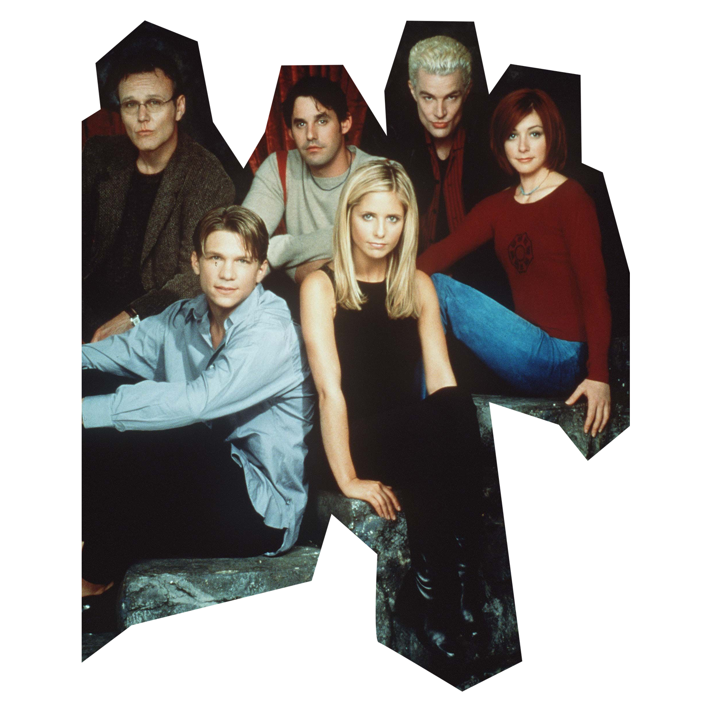
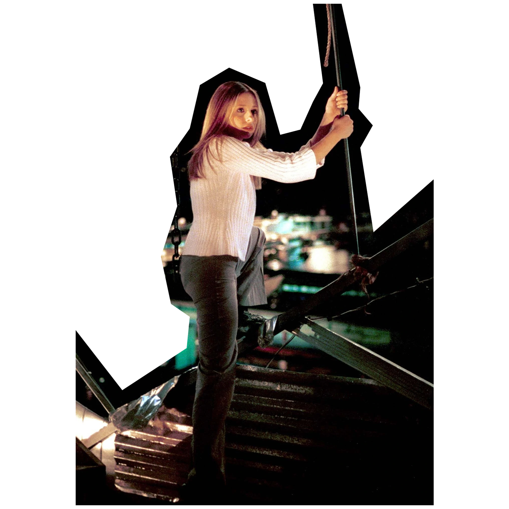
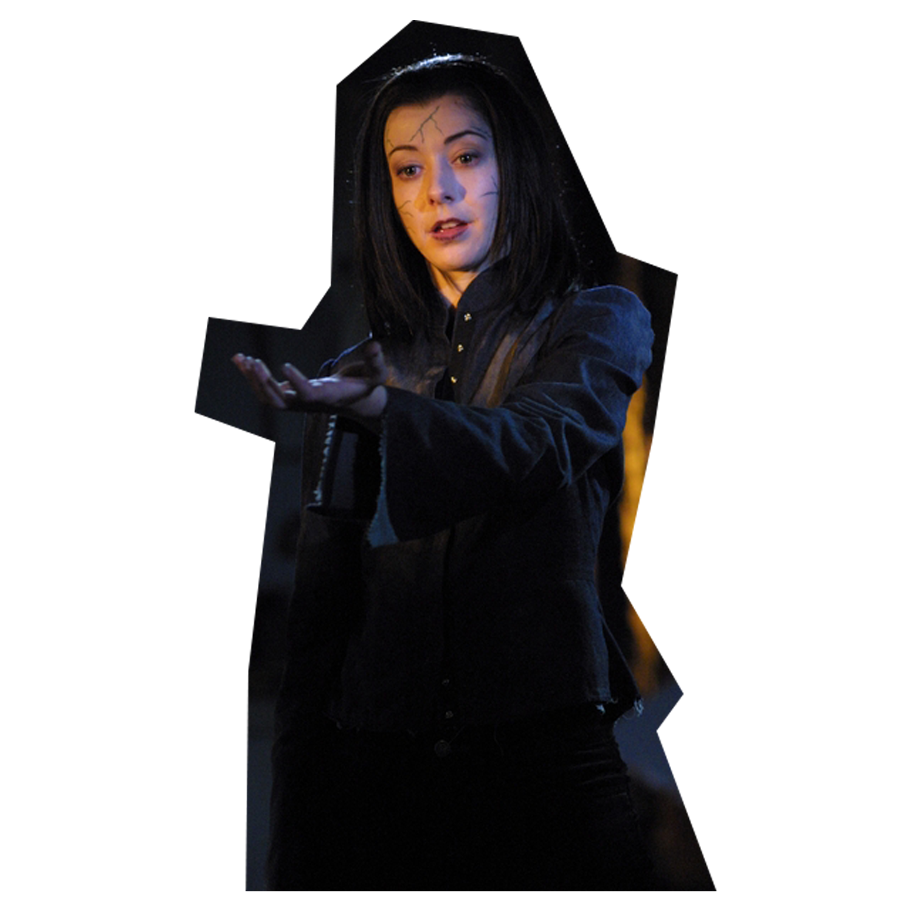
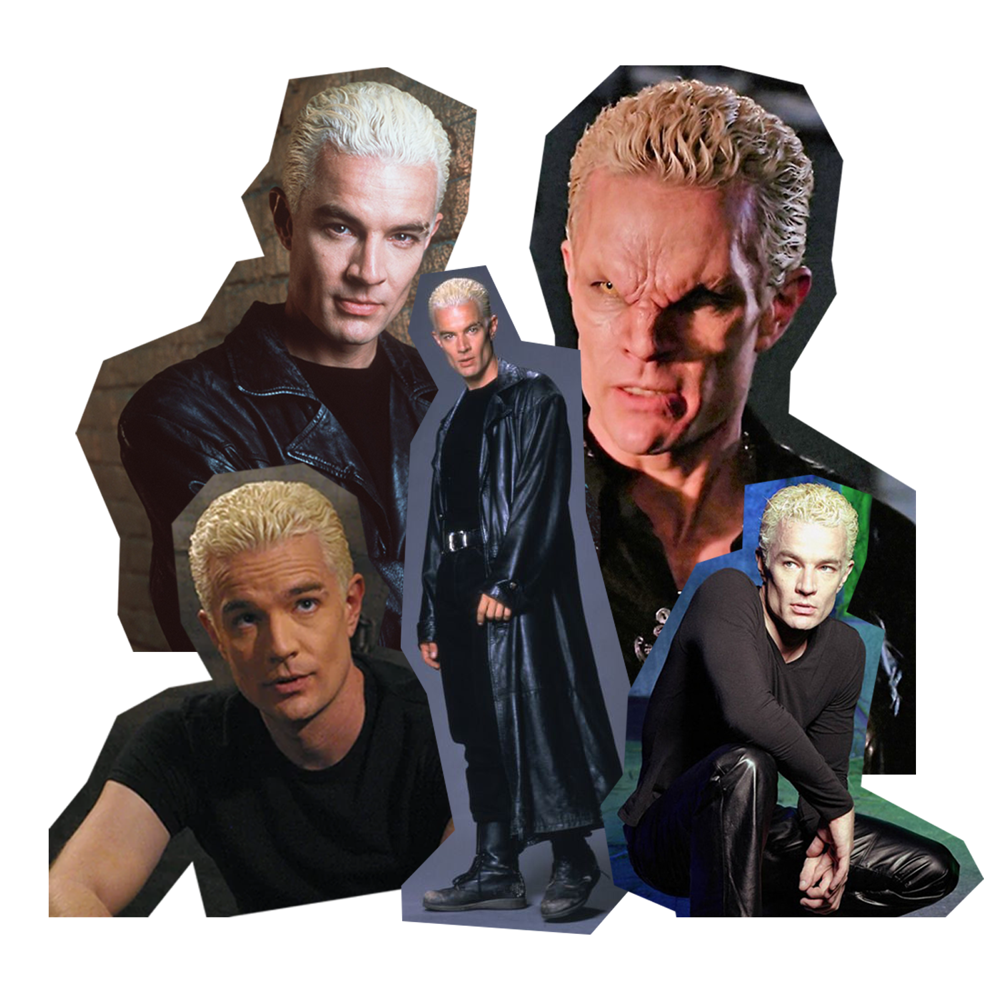

BUFFY THE VAMPIRE SLAYER
"Buffy the Vampire Slayer is an American television series created by writer and director Joss Whedon, which aired from 1997–2003. It featured the exploits of the Slayer Buffy Summers and her group of friends, the Scooby Gang, as they protected Sunnydale from vampires, demons, and the forces of darkness." (Fandom.com)
PROPHECY GIRL

"I may be dead, but at least I'm still pretty." - Buffy (S1E12:Prophecy Girl)
Buffy Anne Summers is the title character of the Buffy the Vampire Slayer franchise. She first appeared in the 1992 film Buffy the Vampire Slayer before going on to appear in the television series and subsequent comic book of the same name. The character has also appeared in the spin-off series Angel, as well as numerous non-canon expanded universe material, such as novels, comics, and video games. Buffy was portrayed by Kristy Swanson in the film, and later by Sarah Michelle Gellar in the television series.
Buffy Anne Summers was a Slayer activated in the late 20th century. Born on January 19, 1981, she was called to be the Slayer in 1996 at the age of fifteen. Buffy was originally living in Los Angeles; but, due to an incident involving a gang of vampires at Hemery High School, she moved to Sunnydale with her mother. There, she acted as guardian of the Hellmouth for seven years before the town's destruction in mid-2003.
Initially a reluctant hero who constantly wished for nothing more than a normal life, Buffy eventually grew to embrace her destiny. Buffy was unique as a Slayer in many ways; she refused to sacrifice her ordinary life for her supernatural destiny, often operated as part of a team with her friends the Scooby Gang, and had romantic relationships with notorious vampires Angel and Spike. (Wikipedia.org)
BIO

"Seize the moment, ’cause tomorrow you might be dead." - Buffy (S1E1:Welcome to the Hellmouth)
| Name | Buffy Anne Summers |
| Portayed by | Sarah Michelle Gellar 💖 👩 |
| Birthday | January 19, 1981 |
| Hometown | Los Angeles |
| Died | 1997 (revived), 2001 (resurrected) |
| BFF's | Willow & Xander |
| Family | Joyce (mom), Dawn (sister) |
| Watcher | Giles |
| Main Love Interests | Angel, Riley Finn and Spike |
| Powers | Proficiency in physical combat, heightened senses, psychic link, prophetic dreaming & intellect |
| Hobbies & Interests | Clothes, ice skating, slaying vampires, demons and the forces of darkness, pyschology, patrolling |
Weapons | Mr. Pointy (stake) and the Mʔ (scythe) |
THE SCOOBY GANG

"Take a moment to deal with this. We survived." - Oz (S3E22:Graduation Part II)
The Scooby Gang was the core group formed after the arrival of Buffy Summers to Sunnydale in order to battle the supernatural forces of evil, and assist Buffy in her duties as the Slayer. The Scoobies, as its members were known, were originally teenage friends attending Sunnydale High School in a town built on top of a Hellmouth. With time, the group gradually expanded with new members and allies in worldwide activity against the forces of darkness. (Fandom.com)
The "Scooby Gang" consists of...
Season 1&2
- Buffy Summers
- Willow Rosenberg
- Xander Harris
- Rupert Giles
- Cordelia Chase
Season 3
- Buffy Summers
- Willow Rosenberg
- Xander Harris
- Rupert Giles
- Cordelia Chase
- Oz
- Angel
Season 4
- Buffy Summers
- Willow Rosenberg
- Xander Harris
- Rupert Giles
- Anya Jenkins
- Oz
- Tara
- Riley Finn
Season 5
- Buffy Summers
- Willow Rosenberg
- Xander Harris
- Anya Jenkins
- Tara
Season 6
- Buffy Summers
- Willow Rosenberg
- Xander Harris
- Anya Jenkins
- Tara
- Dawn Summers
- Spike
Season 7
- Buffy Summers
- Willow Rosenberg
- Xander Harris
- Rupert Giles
- Anya Jenkins
- Dawn Summers
- Spike
- Faith
- Andrew
- Principal Wood
SEASON 1
"So that's it, huh? I remember the drill. One slayer dies, the next one's called. I wonder who she is. Will you train her? Or will they send someone else?" - Buffy (S1E12:Prophecy Girl)
After moving to Sunnydale, California, Buffy Anne Summers just wants to be a normal teenager. Back in Los Angeles, her first Watcher had died; she inadvertently burned down the school gymnasium at her old high school; and her parents got a divorce.
The move to Sunnydale is supposed to give both her and her mother, Joyce, a clean slate. But then she meets the school librarian, Rupert Giles, and quickly learns there is no escaping her destiny. With
SEASON 2
"You know what I think? I just think you're trying to scare me off 'cause you're afraid of the competition. Look, Buffy, you may be hot stuff when it comes to demonology or whatever, but when it comes to dating, I'm the Slayer." - Cordelia (S2E6: Halloween)
After her death at the hands of the Master and a summer vacation spent with her father, Buffy returns to Sunnydale in a strangely withdrawn and snappy mood. She's also determined to break off her relationship with Angel and seems a little too eager to renew her Slayer training. But getting Angel out of her blood proves to be harder than she thought. And as the two draw even closer together, their passion erupts into a danger neither of them could have foreseen — affecting not only Vampire and Slayer, but all of Buffy's friends and family and even her Watcher.
SEASON 3
"Whatever we want! We're Slayers, girlfriend. The Chosen Two. Why should we let him take all the fun out of it?" - Faith (S3E14 Bad Girls)
Buffy returns from the big city to find her friends have been battling the forces of evil without her. As she struggles to regain her mother's and her friends' trust, a new slayer named Faith arrives in town, quickly winning over all of Buffy's friends. But Faith's arrival is just the beginning of new forces Buffy must face, for a few nights later she encounters Angel, who has somehow returned, feral and violent from the hellish demon dimension where Buffy had sent him. But the real demon Buffy must ultimately face is already on this side of the portal, preparing a special graduation day surprise for Sunnydale High.
SEASON 4
"You think you know what's to come, what you are. You haven't even begun." - Tara (S4E22: Restless)
Buffy begins college feeling completely overwhelmed. But once the monsters show up, it's just like old times. Then she starts dating Riley, a handsome commando battling the same monsters. He's part of a secret organization called Initiative, and Buffy is all too happy to join the team. But she soon suspects the Initiative may be more dangerous than the monsters they are supposed to be battling.
SEASON 5
"The hardest thing in this world-is to live in it. Be brave. Live…for me." - Buffy (S5E22:The Gift)
After an unsettling encounter with the Dracula, Buffy asks Giles to once again be her Watcher. Luckily he agrees, for Buffy is about to face mortal problems far more threatening than the undead: the sudden appearance of a sister named Dawn, her mother's mysterious illness and Spike's undying devotion. Then an undefeatable demon appears, forcing Buffy to turn to an ancient Spirit Guide who tells her that love is her greatest gift — and power.
SEASON 6
"Bored now" - Willow (S6E20: Villains)
Elated with having Buffy back from the dead, her friends never wonder if she may have been in a better place. Only Spike knows the truth and as Buffy struggles to readjust to life she begins a relationship with Spike that torments her as much as it brings her fleeting comfort. Yet even as Buffy fears that the magic that brought her back has somehow changed her, Willow's growing reliance on magic is an addiction she can barely control — and one that threatens everyone.
SEASON 7
"I've seen the best and the worst of you, and I understand, with perfect clarity, exactly what you are. You're a hell of a woman. You're the One, Buffy." - Spike (S7E20 Touched)"
As Buffy accompanies Dawn on her first day at the new Sunnydale High, Giles continues Willow's magic education in England. But while Buffy is surprised to be offered a guidance counselor job, Willow is shocked to experience a horrific future vision of the Hellmouth. Willow returns to Sunnydale and Giles soon follows with word that the Watcher's Council has been destroyed. Determined to make one last stand, Buffy and her allies gather for the upcoming battle, yet nothing can prepare them for the First and his robed Bringers, who are killing all the Potential Slayers — and anyone else who gets in their way.
THE BEST SHOW EVER
I first started watching Buffy the Vampire Slayer 2 years ago and have watched it's entirety twice. I have never watched a show this good and will personally say that it is the best t.v show EVER. If I had to rank the seasons from best to worst, It'd be season 5, 6, 3, 7, 1, 2 and 4. However, each season has their shining moments and have something to offer. I wish they continued filming the show because the stories and characters are amazing. Joss Whedon did an amazing job with directing the show and can't say there's anything like it. This show follows Buffy, a strong female lead character kicking ass and continuosly saving the world from the apocalypse.
I do not own any of the photos, videos and information. They are credited to the orginal owners.
Sites used for information:
(Fandom.com) (Wikipedia.org)